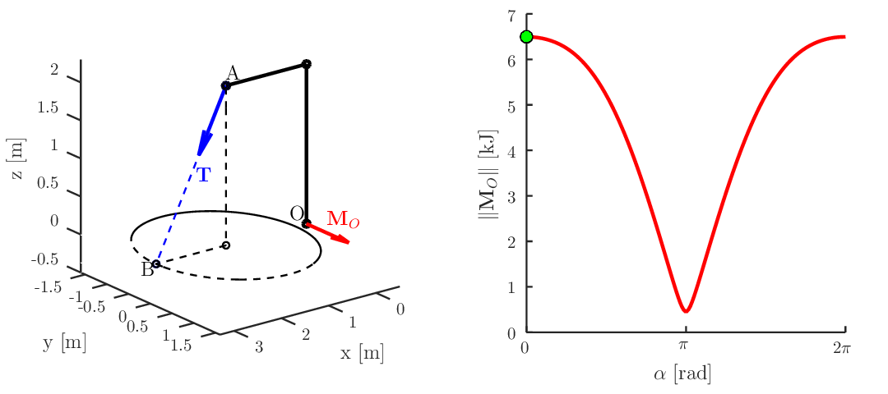

Clases
-
Las clases estarán disponibles en formato PDF en los siguientes enlaces a medida que se vayan dictando.
- Clase 0
- Clase 1
- Clase 2
- Clase 3
- Clase 4
- SenoCoseno.m
- SenoCoseno_Makeup.m
- If-Else.m
- Switch.m
- RaizPotencia.m
- BrazoTensionado_Torque.m
- BrazoTensionado_Plot.m
- FuncionAnonima.m
- TiraDosDados.m
- TransitorioRedMezcladores.m
Scripts ejemplos

Representación del momento torsor M_o generado en el punto O en función de la posición del punto B, para la trayectoria que se muestra en el plano XY (círculo negro).


Esta obra está bajo una Licencia Creative Commons Atribución-NoComercial-CompartirIgual 4.0 Internacional